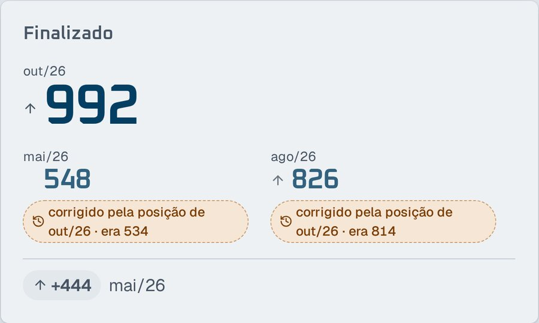
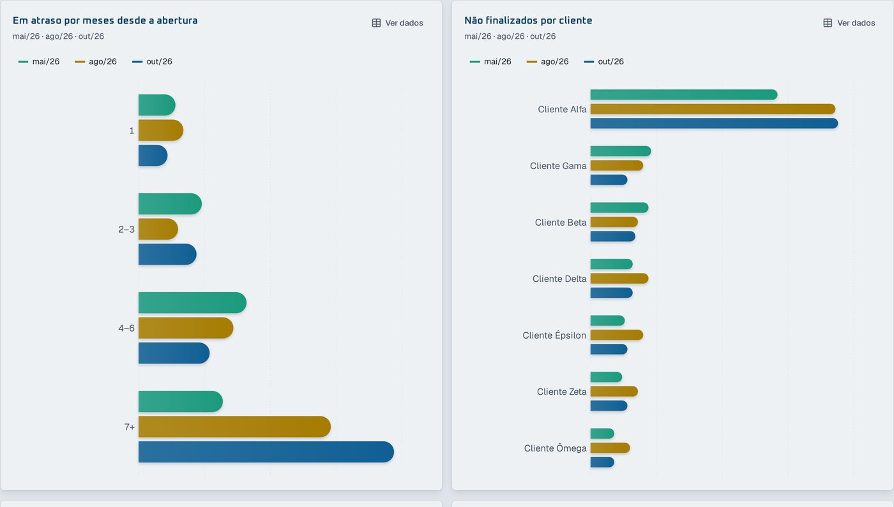
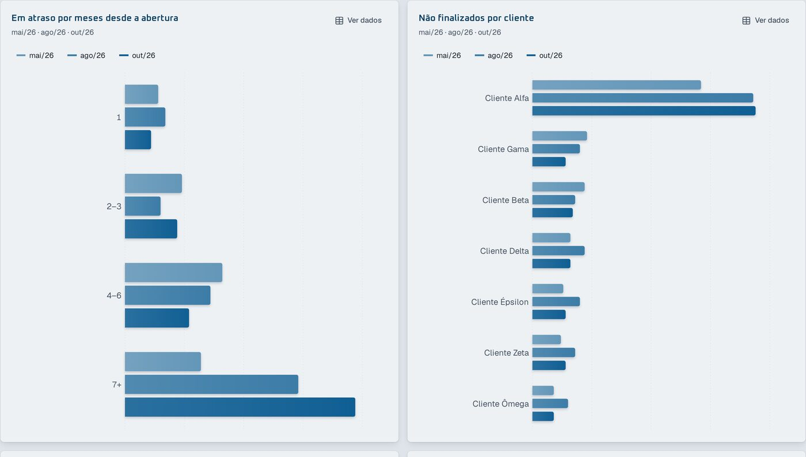
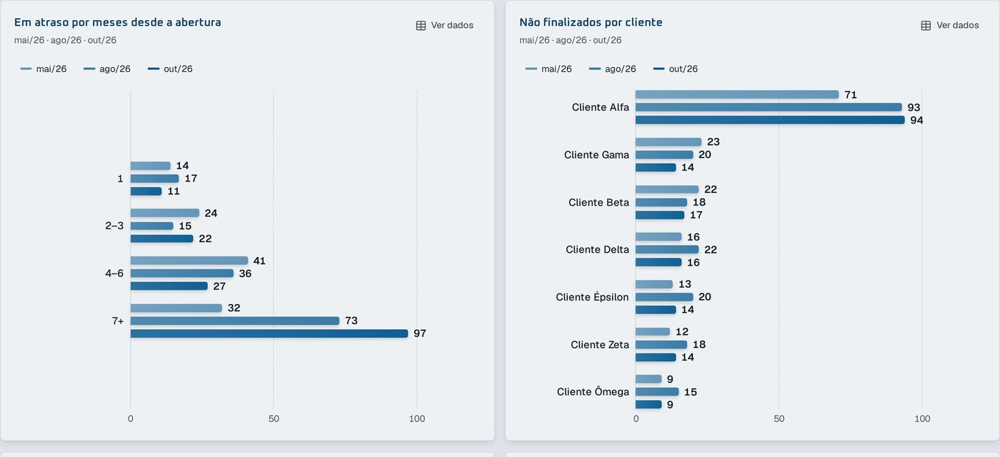
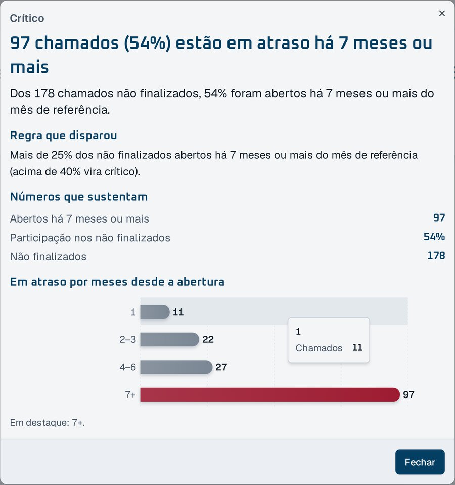
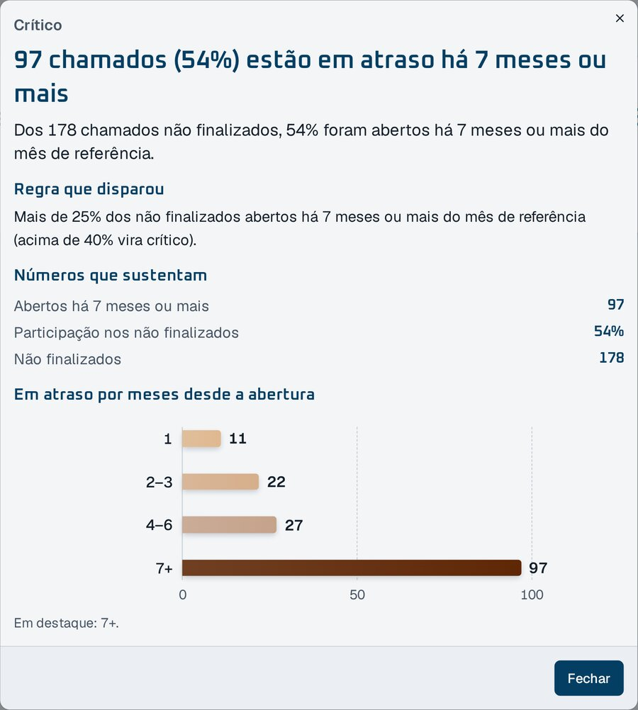
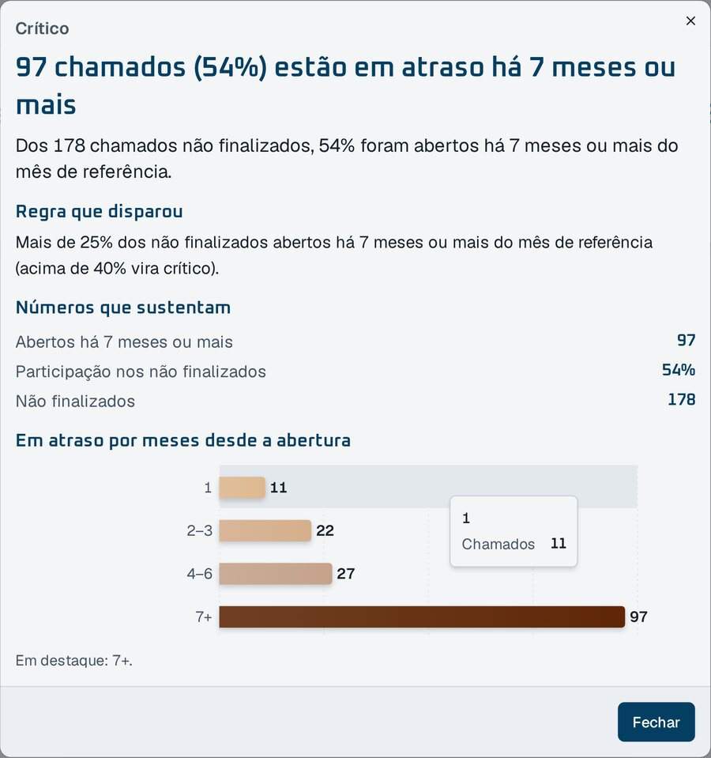

A D72 pediu que, depois do Painel, o mesmo acabamento fosse para o Comparar e as Leituras. Abaixo estão o antes e as opções, com capturas do protótipo nas planilhas fictícias: Comparar com mai/26, ago/26 e out/26.
1Cartões do Comparar: o Δ em selo
Recomendo o selo. O Δ fica igual ao do Painel: selo com seta e valor, seguido do mês de partida em cinza. "Pior" e "melhor" continuam só para leitor de tela.
Hoje: "Δ +444" em texto, sem dizer contra qual mês.

Proposta: selo "↑ +444" e "mai/26" em cinza (a diferença é da última para a primeira competência).
2Barras "No mês" do Comparar
Recomendo a B. Na spec eu tinha recomendado a A, mas as capturas mudaram a recomendação. A B usa o mesmo componente de barras do Painel e mostra os valores e o eixo, o que ajuda na leitura de longe. O risco é a altura: com 5 ou 6 competências, cada categoria fica alta. Ainda não testei esse caso, e confiro antes de implementar.

Hoje: uma cor diferente por competência, pontas redondas, sem eixo.

A: as mesmas barras com base reta e ponta de 4 px, em tons de um azul (a competência mais recente mais forte), sem eixo. Nesta captura e na de hoje, os valores não aparecem.

B: o componente de barras do Painel, uma barra fina por competência, com valores, eixo e grade, e a mesma animação de valor do Painel.
3Cores das competências
Recomendo os tons de um azul (A e B acima): a cor diz qual é a mais recente, sem inventar significado para verde e amarelo. Com 5 ou 6 competências, os dois tons mais claros ficam parecidos. Se isso acontecer, ajusto a escala antes de implementar.
Hoje cada competência tem uma cor sem relação com o tempo (verde, amarelo, azul).
4Barras no modal das Leituras
Recomendo a A. É o mesmo componente de barras do Painel, com eixo, e o app fica com um padrão de barras só. As duas opções trocam o cinza genérico pelas cores das faixas de atraso.

Hoje: faixas em cinza e o 7+ em vermelho.

A: componente do Painel, com as cores das faixas e um eixo de 0 a 100.

B: o componente atual, com as cores das faixas, ponta de 4 px e a dica ao passar o mouse.
5A faixa 7+ deixa de ser vermelha
Recomendo aceitar. Nas duas opções das Leituras, o 7+ fica no marrom escuro das faixas de atraso, igual ao Painel. A D75 reservou o vermelho para o SLA vencido.
Como responder
Por exemplo: "1 selo, 2 B, 3 tons, 4 A, 5 ok". O que você aprovar vira os critérios das specs 003 e 004. Depois vêm os testes, a implementação e a revisão, cada um com um agente diferente.
Para ver ao vivo: branch proto/padrao-comparar-leituras, com ?comparar=atual|A|B e ?leituras=atual|A|B no endereço. Os dados somem ao recarregar, então é preciso reenviar as planilhas depois de trocar a opção.